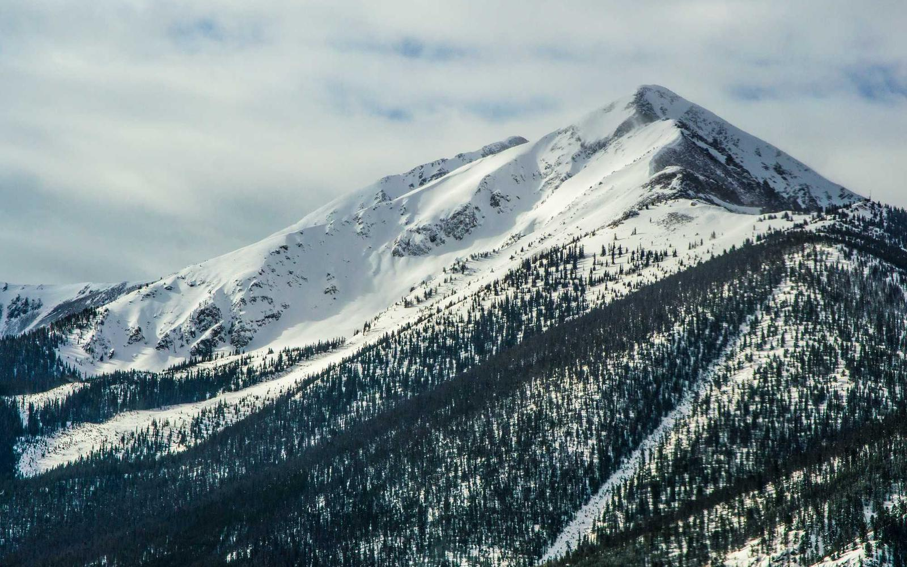
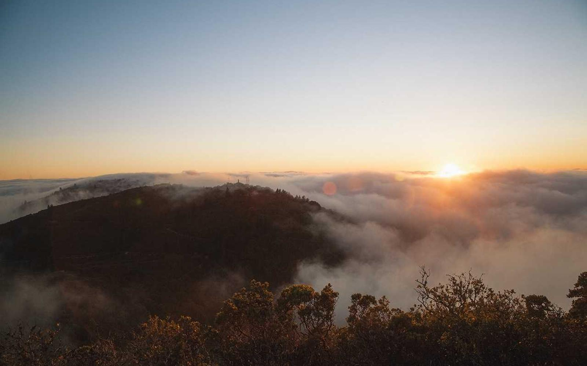
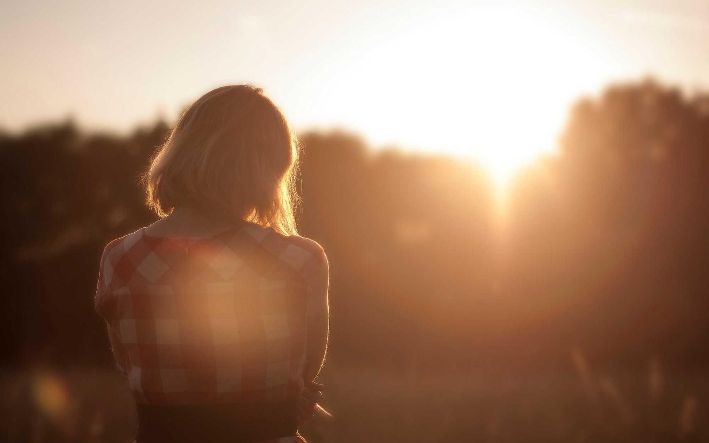
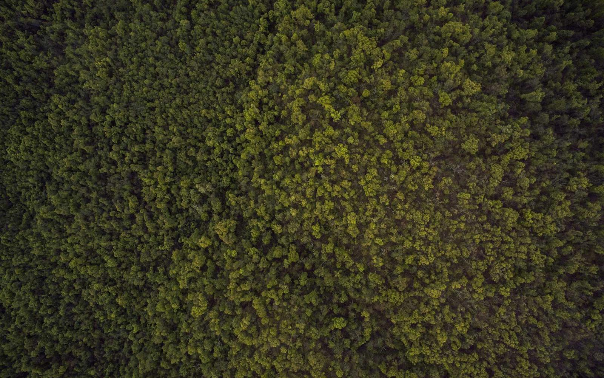

Cerrado





Contexto
O Cerrado é a savana tropical brasileira e um dos hotspots de biodiversidade do planeta. Em Mato Grosso, ocupa amplas áreas e é berço de importantes bacias hidrográficas.
Desafios de preservação
- Expansão agropecuária e fragmentação de habitats.
- Fogo frequente alterando ciclos ecológicos naturais.
- Perda de cobertura nativa e impactos sobre recursos hídricos.
Fauna e flora
Lobo-guará, tamanduá-bandeira, ema e seriema são emblemáticos. Na flora, ipês, sucupiras e espécies adaptadas a solos pobres e ao fogo.
Biodiversidade
Alta endemismo e riqueza de espécies. A conservação do Cerrado é estratégica para a água e para corredores entre biomas.